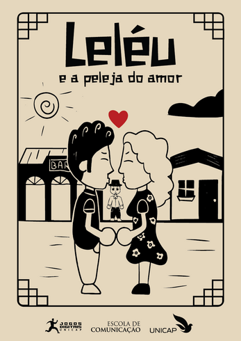
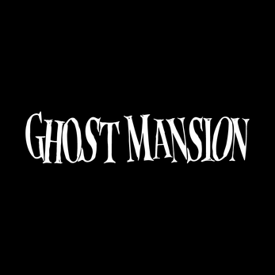
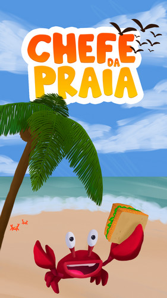

PROJETOS
-
Leléu e a Peleja do Amor
Leléu e a Peleja do Amor" é um jogo runner lateralizado feito para ser jogado em realidade aumentada (RA), inspirado na obra "Lisbela e o Prisioneiro" de Osman Lins.
Adaptando elementos da obra, o jogo cria um falso 3D usando elementos 2D para formar o cenário como um diorama, com estética de cordel e elementos imersivos de RA para oferecer uma experiência única e culturalmente rica.
Foi o meu trabalho de conclusão de curso enquanto ainda cursava Jogos Digitais. O projeto foi extremamente desafiador e trabalhoso, mas todos os obstáculos foram recompensadores, pois o jogo recebeu o prêmio de melhor arte dentre todos os TCCs. Além disso, pude apresentar o game em uma palestra na Campus Party Nordeste 2024.
-
Ghost Mansion
Um caçador de fantasmas recebe um pedido para ir visitar uma velha mansão abandonada que está infestada de fantasmas. Ao chegar lá, ele se depara com um desafio imenso, pois ele não imaginava que ficaria preso em um ciclo infinito de caçar e ser caçado.
Foi o meu primeiro jogo feito totalmente em 3D, também um trabalho do curso de Jogos Digitais, onde o desafio era criar um jogo em três dimensões. É um jogo de sobrevivência, no qual o jogador deve pontuar o máximo possível enquanto desvia e extermina diversos fantasmas.
-
Chefe da Praia
Chefe da Praia te coloca na pele de um chefe de cozinha que trabalha em um quiosque na famosa praia de Boa Viagem, um dos pontos turísticos mais movimentados e vibrantes de Recife. O ritmo do jogo aumenta à medida que mais clientes aparecem, e você precisa manter a calma para preparar os pratos corretamente e dentro do prazo. Cuidado, pois os clientes podem ficar furiosos!
Chefe da Praia foi desenvolvido durante o 3° período do curso de Jogos Digitais, onde o objetivo era criar um jogo mobile que fosse ao mesmo tempo divertido e desafiador, colocando à prova suas habilidades de agilidade, precisão e gerenciamento de tempo.
O estilo de jogo escolhido foi o Cooking Game, devido à sua combinação perfeita de estratégia e ação. No jogo, você deve gerenciar todas as etapas do atendimento ao cliente: receber os pedidos, preparar os pratos com os ingredientes corretos e, finalmente, entregá-los no tempo certo.